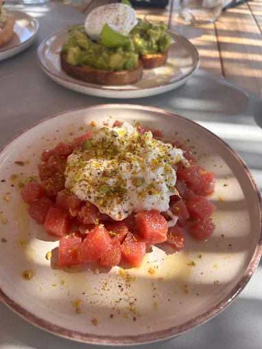

Antipasti
Piccoli assaggi, verdure di stagione, salumi e specialità salentine.
da € 8ANDRANO · SALENTO
Sapori del Salento, prodotti scelti e una tavola dove sentirsi subito a casa.
Una cucina che parla pugliese
Qui non serve complicare le cose. Partiamo da ingredienti del territorio, ricette che conosciamo da sempre e qualche idea nuova.
Il risultato è una cucina sincera, stagionale e conviviale. Quella che ti fa venire voglia di restare ancora un po' a tavola.
IL LOCALE
Un posto pensato per una cena tra amici, una serata speciale o semplicemente per mangiare bene senza sentirsi ingessati.
Vieni a trovarci →La parte migliore della giornata?
Quando ci si siede a tavola.
— LA CUCINA DI CASA, VERSIONE NOSTRA
Ci vediamo ad Andrano
Per prenotazioni e informazioni chiamaci direttamente. Per richieste particolari, allergie o tavolate, meglio sentirci prima.
Lungo amare delle agavi, Marina di Andrano (LE)
Lun–Dom · 7:00–3:00
Sempre Aperti